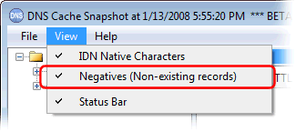
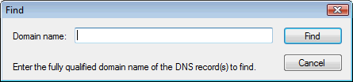

---
title: New in Simple DNS Plus v. 5.0 - DNS Cache Snapshot module
category: 17
frontpage: false
comments: true
refs: 95
created-utc: 2019-01-01
modified-utc: 2019-01-01
---
Faster loading
The biggest improvement may be the way this new version of the DNS Cache Snapshot module loads the cache data.
Earlier versions would load all the record names from the cache data directly into the domain name list, which with larger caches could take a long time to complete. This new version initially loads all the cache data into a memory hash table (500,000 entries load in just a few seconds), and then it uses this to populate the domain name list only as needed. Sub-names are not actually loaded into the list until you click [+] to expand a node, and then a progress bar is shown when loading larger lists. But even this typically only takes a few seconds, so with this new version, it is really quite fast to browse through large caches.
Negative entries
There is a new option to include/exclude negative entries (non-existing records):

Search
A new function to search the cache for specific DNS record names - FAST! (it can search through 500,000 records in only a fraction of a second):
